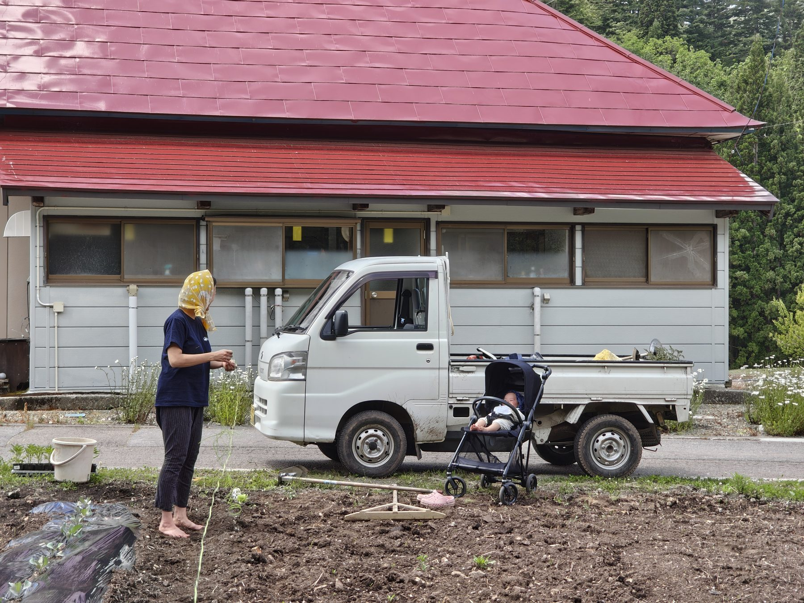

Move to the village and build the field with us, or come regularly and join the work while you are here. There are two ways to take part.
We are looking for two or three founding companions to build a way of life and a community together over five to ten years.
We plan to use Japan's Community Revitalization Cooperator (chiiki okoshi kyoryokutai) program for this position. Applicants who meet the residency requirements may be contracted under that program.

Families are welcome to relocate together
Because the work depends on nature, you will need to adapt as situations arise.
Given the region, snow shoveling is needed from around December to March; snow can exceed two meters. In summer, about five days a month go to cutting grass.
There are no convenience stores or places to eat out at night, so cooking for yourself is the norm.
Living here to support the farm ── Kazuto, who took a leave from university and was a huge help living on site through Munokai's busy spring season
For people who want to be part of this project on the ground while keeping their current job and life.
Four parties, including companies, are currently involved in this way.
If you are interested, start by visiting the field to volunteer or look around.
Please apply through the form below.
Our partners from Nomadics dredging an irrigation channel
Planting rice at Munokai with the team from Atria, who come once a month
At a market in Showa Village with our partner Yurie (right)
You can use this form to ask about either resident or commuting membership. It is fine if you have not decided everything yet. We will review your message and get back to you.
Building the foundations of life in Aizu and Oku-Aizu.
A path toward a new kind of abundance.
Published by ZEN-BU Inc.